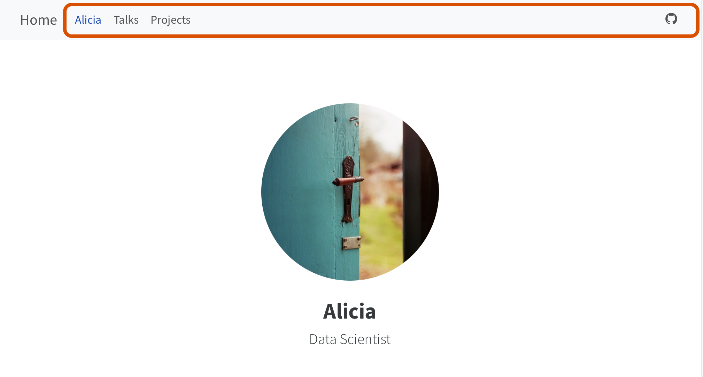
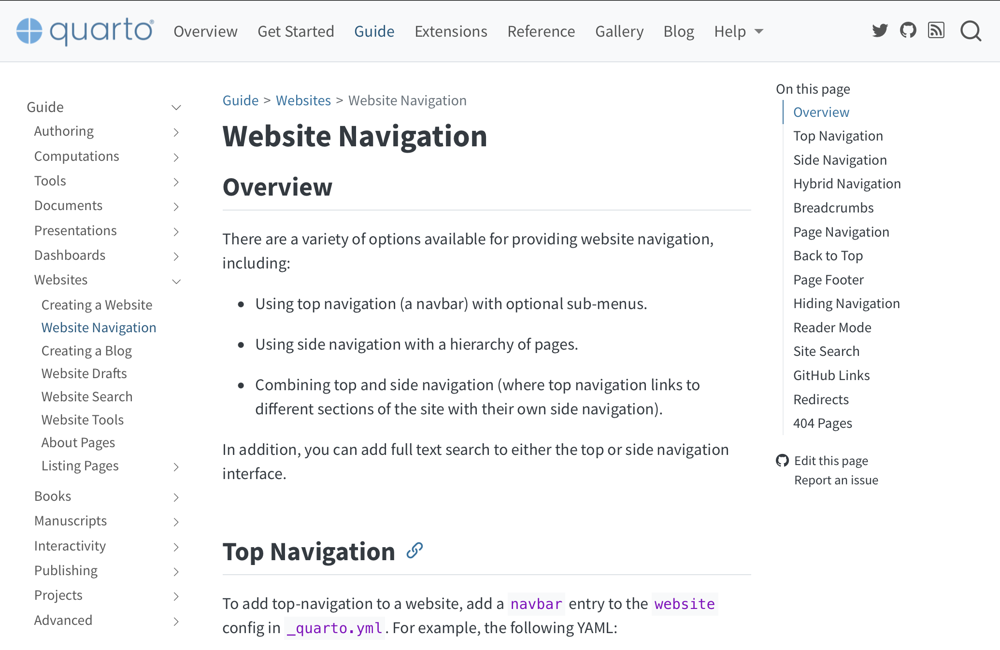
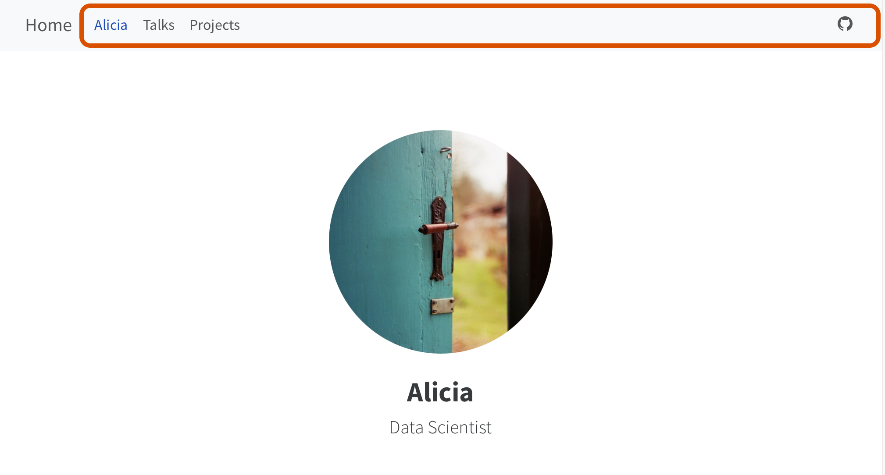
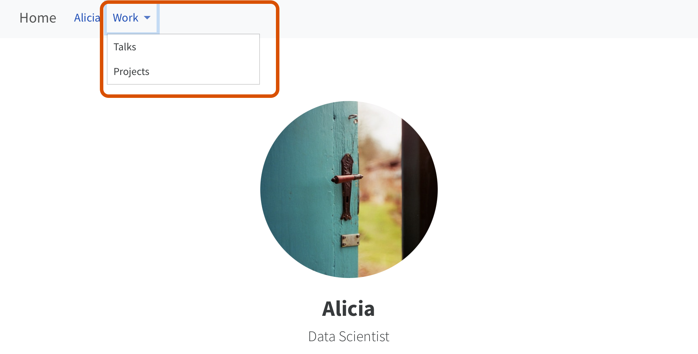

Primary Navigation
Top navigation

Side navigation

Use navigation items in left, right and tools
Other customization: title, logo, search
Brainstorm with your neighbor: What elements on this page allow the user to navigate the site?

…

05:00

…

Top navigation

Side navigation
Top navigation

Side navigation

Top navigation navigates between the different “sections” of the website.
Each “section” has its own side navigation.